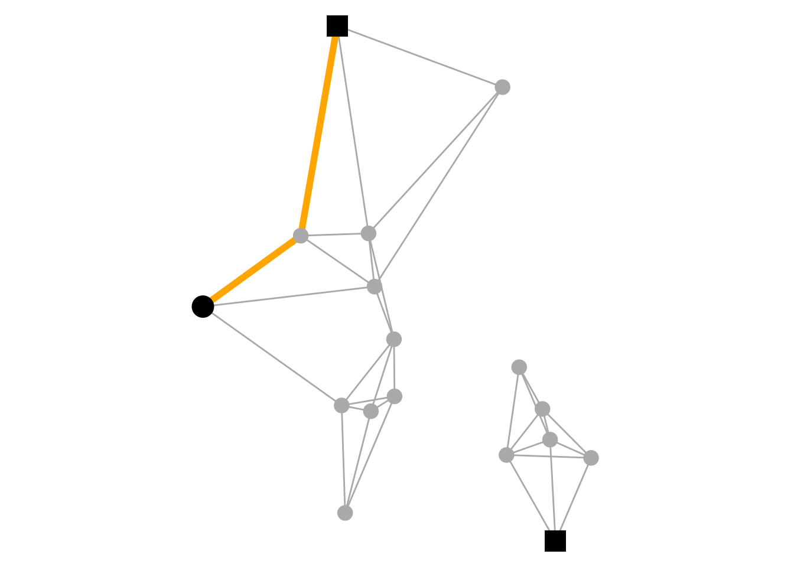
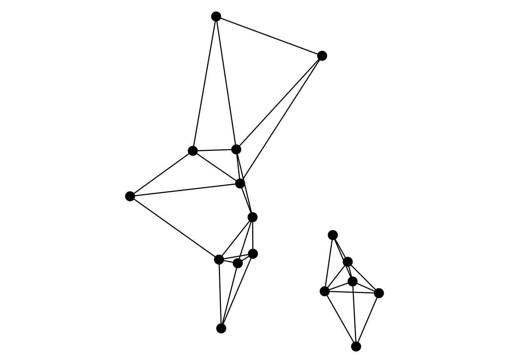
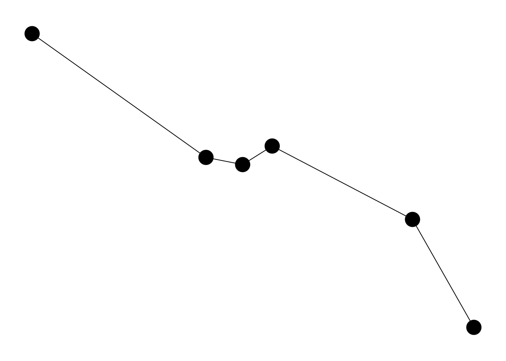
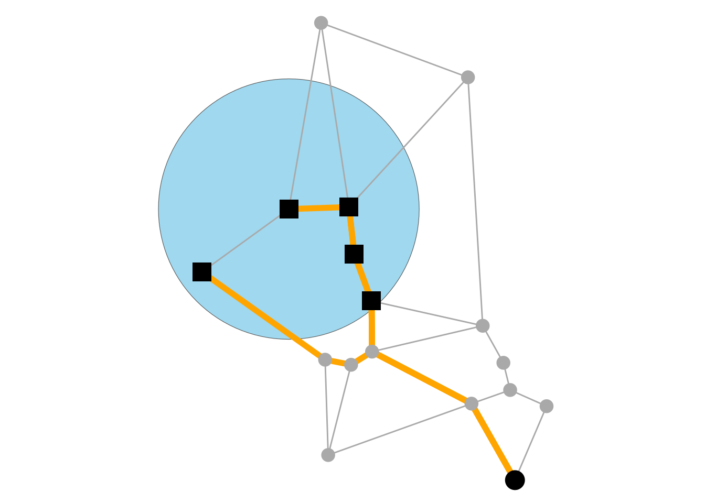
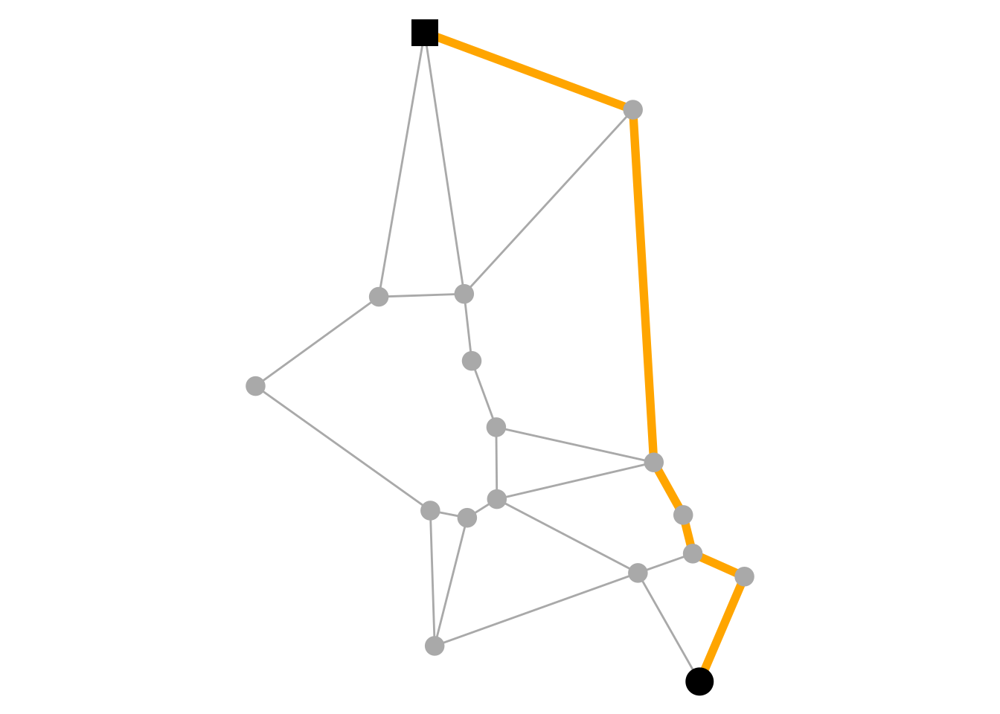
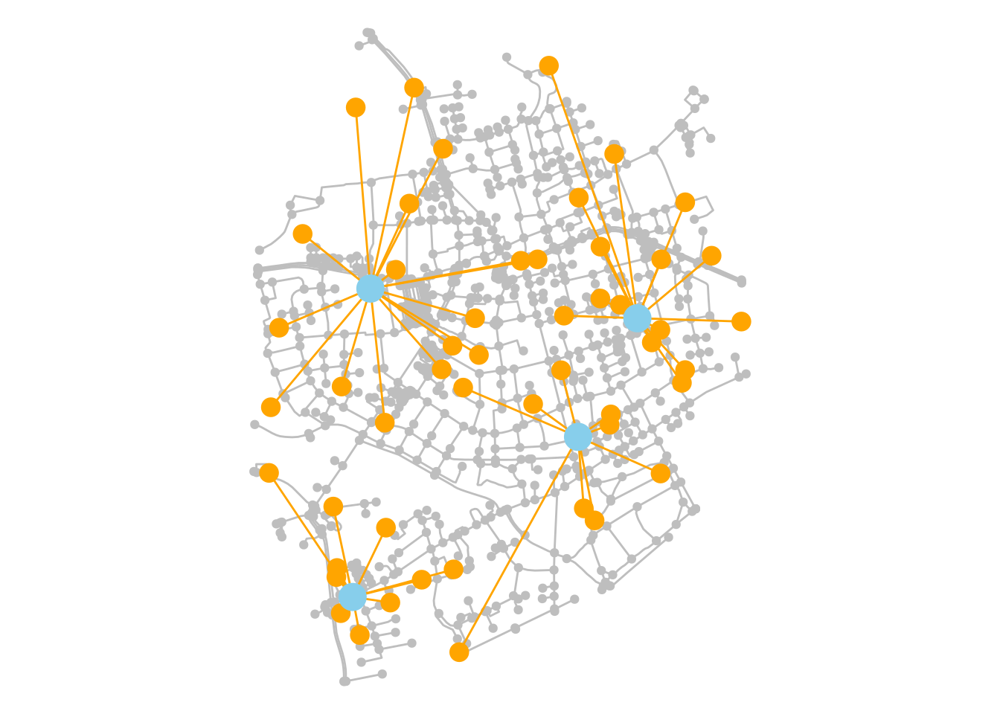
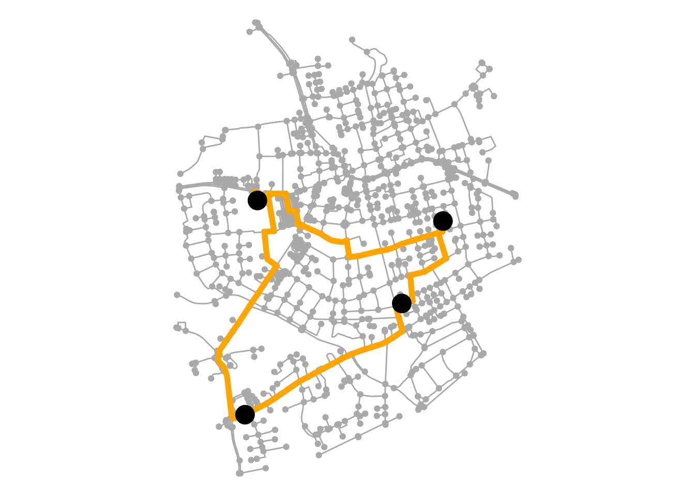
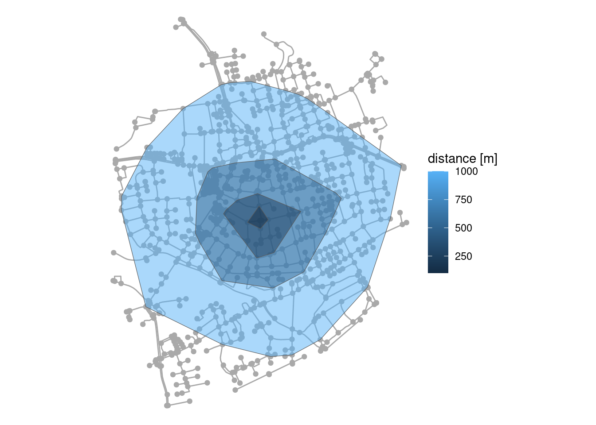
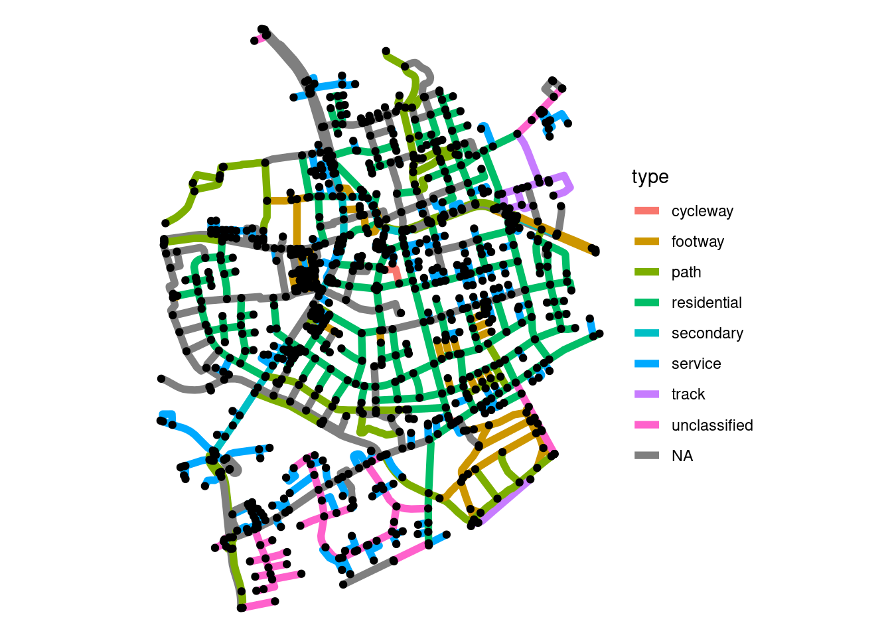
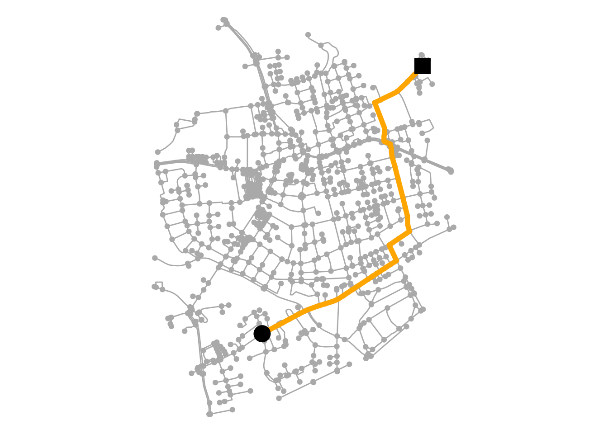

Calculating shortest paths between pairs of nodes is a core task in spatial network analysis. sfnetworks does not implement its own algorithms to do this, but wraps function from other packages and exposes them through one consistent API that fits within the design of the package. This vignette demonstrates how.
The basics
In sfnetworks there are two core functions for routing on spatial networks. The first one, st_network_paths(), returns the course of the optimal paths between pairs of nodes. The second one, st_network_cost(), returns a matrix of optimal travel costs between pairs of nodes.
Both functions need to be provided with nodes to route from (the origins), and nodes to route to (the destinations). The most basic way of doing this is through the integer node indices, which correspond to the rownumbers of the nodes table. There are many other ways, though, which are explained in detail in this section. Secondly, it should be specified what the weight of each edge is. Higher edge weights result in higher travel costs. By default, sfnetworks will always use the geographic lengths of the edges. It is possible to specify different edge weights, which is explained in detail in this section.
The function st_network_paths() returns a sf object with one row per requested path. Columns from and to contain the node indices of the origin and destination of each path. The column node_path contains the indices of the nodes on the path, in order of visit. Similarly, the column edge_path contains the indices of the edges on the paths, in order of visit. If your nodes and/or edges have names stored in a column named name and you want to use those values instead to encode them, set use_names = TRUE. Column cost stores the total travel cost of the path. The geometry column is the linestring that resulted from concatenating the individual geometries of all visited edges.
# Create a network.
net = as_sfnetwork(mozart, "gabriel", directed = FALSE)
# Compute the shortest path between node 1 and nodes 12 and 17.
paths = st_network_paths(net, 1, c(12, 17))
paths#> Simple feature collection with 2 features and 6 fields
#> Geometry type: LINESTRING
#> Dimension: XY
#> Bounding box: xmin: 4548664 ymin: 2747309 xmax: 4549504 ymax: 2748537
#> Projected CRS: ETRS89-extended / LAEA Europe
#> # A tibble: 2 × 7
#> from to node_path edge_path path_found cost geometry
#> <int> <int> <list> <list> <lgl> [m] <LINESTRING [m]>
#> 1 1 12 <dbl [6]> <dbl [5]> TRUE 1081. (4549504 2747309, 4549387 27…
#> 2 1 17 <dbl [7]> <dbl [6]> TRUE 1436. (4549504 2747309, 4549387 27…
# Do the same but now use node names to encode nodes in the output.
paths = st_network_paths(net, 1, c(12, 17), use_names = TRUE)
paths#> Simple feature collection with 2 features and 6 fields
#> Geometry type: LINESTRING
#> Dimension: XY
#> Bounding box: xmin: 4548664 ymin: 2747309 xmax: 4549504 ymax: 2748537
#> Projected CRS: ETRS89-extended / LAEA Europe
#> # A tibble: 2 × 7
#> from to node_path edge_path path_found cost geometry
#> <chr> <chr> <list> <list> <lgl> [m] <LINESTRING [m]>
#> 1 Mozartki… Moza… <chr [6]> <dbl [5]> TRUE 1081. (4549504 2747309, 454938…
#> 2 Mozartki… Moza… <chr [7]> <dbl [6]> TRUE 1436. (4549504 2747309, 454938…
ggraph(net, "sf") +
geom_edge_sf(color = "darkgrey") +
geom_sf(data = paths, color = "orange", linewidth = 2) +
geom_node_sf(color = "darkgrey", size = 4) +
geom_sf(data = node_data(net)[1, ], size = 6) +
geom_sf(data = node_data(net)[c(12, 17), ], pch = 15, size = 6) +
theme_void()
The function st_network_cost() returns a matrix, with being the number of specified origins, and being the number of specified destinations. Element stores the total travel cost of the shortest path between the -th origin and the -th destination. This matrix is usually an important starting point for further analysis. For example, it can serve as input to route optimization algorithms, spatial clustering algorithms and the calculation of statistical measures based on spatial proximity.
# Compute the cost matrix for travel between three nodes.
st_network_cost(net, c(1, 12, 17), c(1, 12, 17))
#> Units: [m]
#> 1 12 17
#> 1 0.000 1081.3335 1435.9344
#> 12 1081.333 0.0000 795.9422
#> 17 1435.934 795.9422 0.0000
# Use node names to encode nodes.
st_network_cost(net, c(1, 12, 17), c(1, 12, 17), use_names = TRUE)
#> Units: [m]
#> Mozartkino Mozart-Eine Hommage Mozart Studentenheim
#> Mozartkino 0.000 1081.3335 1435.9344
#> Mozart-Eine Hommage 1081.333 0.0000 795.9422
#> Mozart Studentenheim 1435.934 795.9422 0.0000There is also the function st_network_distance(), which is a synonym for st_network_cost() with the edge weights always being the geographic edge length. This function was added to provide an intuitive network-specific alternative to sf::st_distance().
Do note that in our nice little example network all nodes are connected to each other. In many real-world networks this may not always be the case, meaning that some node pairs will not have a path between them. In that case st_network_paths() will still return the “path”, but with an empty geometry and a FALSE value in the path_found column. st_network_cost() will store an Inf value.
divided_net = as_sfnetwork(mozart, "knn", k = 3, directed = FALSE)
#> Warning in spdep::knn2nb(spdep::knearneigh(st_geometry(x), k = k), sym =
#> FALSE): neighbour object has 2 sub-graphs
paths = st_network_paths(divided_net, 12, c(1, 17))
paths#> Simple feature collection with 2 features and 6 fields (with 1 geometry empty)
#> Geometry type: LINESTRING
#> Dimension: XY
#> Bounding box: xmin: 4548664 ymin: 2747868 xmax: 4548984 ymax: 2748537
#> Projected CRS: ETRS89-extended / LAEA Europe
#> # A tibble: 2 × 7
#> from to node_path edge_path path_found cost geometry
#> <int> <int> <list> <list> <lgl> [m] <LINESTRING [m]>
#> 1 12 1 <dbl [0]> <dbl [0]> FALSE Inf EMPTY
#> 2 12 17 <dbl [3]> <dbl [2]> TRUE 796. (4548664 2747868, 4548897 274…
ggraph(divided_net, "sf") +
geom_edge_sf(color = "darkgrey") +
geom_sf(data = paths, color = "orange", linewidth = 2) +
geom_node_sf(color = "darkgrey", size = 4) +
geom_sf(data = node_data(divided_net)[12, ], size = 6) +
geom_sf(data = node_data(divided_net)[c(1, 17), ], pch = 15, size = 6) +
theme_void()
st_network_cost(divided_net, c(1, 12, 17), c(1, 12, 17))
#> Units: [m]
#> 1 12 17
#> 1 0 Inf Inf
#> 12 Inf 0.0000 795.9422
#> 17 Inf 795.9422 0.0000In many cases, it is a good idea to first extract the largest connected component from your network before computing routes. This can be done by the morpher tidygraph::to_largest_component().
# Extract only the largest connected component.
component = convert(divided_net, to_largest_component)
ggraph(divided_net, "sf") +
geom_edge_sf() +
geom_node_sf(size = 4) +
theme_void()
ggraph(component, "sf") +
geom_edge_sf() +
geom_node_sf(size = 4) +
theme_void()

If you do not want to extract the shortest paths as linestring geometries, but rather subset the network to only keep those nodes and edges that are in the path, the to_spatial_shortest_paths() morpher is your choice. It accepts the same arguments as st_network_paths(), but will return a filtered network for each requested path. The nodes and edges tables of each sub-network are arranged by the order in which they appear in the path.
paths = net |>
morph(to_spatial_shortest_paths, 1, c(12, 16, 17)) |>
crystallize()
paths#> # A tibble: 3 × 2
#> name graph
#> <chr> <list>
#> 1 1 <sfnetwrk>
#> 2 2 <sfnetwrk>
#> 3 3 <sfnetwrk>
purrr::walk(paths$graph, plot, cex = 4)


Choosing a routing backend
As mentioned, sfnetworks does not implement the routing algorithms themselves. For that, it relies on other packages, which we call “routing backends” or “routers” for short. The default routing backend is igraph. The st_network_paths() function wraps, depending on argument settings, igraph::shortest_paths(), igraph::all_shortest_paths() and igraph::k_shortest_paths(). The st_network_cost() function wraps igraph::distances(). The benefits of this routing backend are: 1) it can compute all shortest paths, if there exists more than one; 2) it can compute the shortest paths with Yen’s algorithm; 3) no internal conversion between data structures is needed. However, routing is only supported from a single origin. Hence, many-to-many routing is not possible.
The second routing backend that is currently supported is dodgr. This package implements a very fast routing algorithm in C++. This is exposed in sfnetworks by wrapping dodgr::dodgr_paths() in st_network_paths() and dodgr::dodgr_dists() in st_network_cost(). The benefits of this routing backend are: 1) it can route from multiple origins to multiple destinations, i.e. many-to-many routing; 2) it supports dual-weighted routing (see here); 3) it is very fast also on large networks. However, there is currently no support for shortest paths routing, and some internal conversions are needed to bridge between the different data structures.
You can specify which routing backend to use through the router argument. If you want to change the default routing backend, update the global options: options(sfn_default_router = "dodgr").
Specifying origins and destinations
The nodes to route from (i.e. the origins) and the nodes to route to (i.e. the destinations) should be referenced by their integer index, which corresponds to their rownumber in the nodes table of the network. However, sfnetworks allows you to reference nodes also in different ways, and it will internally find the corresponding node indices for you. This is called a sfnetwork node query, and it is evaluated by evaluate_node_query(). However, you will normally never call that function directly as a user. Instead, you simply specify your node query as argument value of the from and to arguments. The query can be formatted as follows:
- As spatial features: Spatial features can be given as object of class
sforsfc. The nearest node to each feature is found by callingnearest_nodes(). - As node type query function: A node type query is a specific type of a node measure function that defines for each node if it is of a given type or not. Nodes that meet the criterium are queried.
- As node predicate query function: A node predicate query is a specific type of node measure function that defines for each node if a given spatial predicate applies to the spatial relation between that node and other spatial features. Nodes that meet the criterium are queried.
- As column name: The referenced column is expected to have logical values defining for each node if it should be queried or not. Tidy evaluation is used and hence the column name should be unquoted.
- As integers: Integers are interpreted as node indices. A node index corresponds to a row-number in the nodes table of the network.
- As characters: Characters are interpreted as node names. A node name corresponds to a value in a column named name in the the nodes table of the network. Note that this column is expected to store unique names without any duplicated values.
- As logicals: Logicals should define for each node if it should be queried or not.
pt = st_centroid(st_combine(mozart))
pl = st_buffer(mozart[15, ], 350)
paths_A = st_network_paths(
net,
from = pt,
to = centrality_degree() < 3
)
paths_B = st_network_paths(
net,
from = "Mozartkino",
to = node_is_within(pl)
)
ggraph(net, "sf") +
geom_edge_sf(color = "darkgrey") +
geom_sf(data = paths_A, color = "orange", linewidth = 2) +
geom_node_sf(color = "darkgrey", size = 4) +
geom_sf(data = node_data(net)[unique(paths_A$from), ], size = 6) +
geom_sf(data = node_data(net)[unique(paths_A$to), ], pch = 15, size = 6) +
geom_sf(data = pt, color = "skyblue", size = 6) +
theme_void()
ggraph(net, "sf") +
geom_sf(data = pl, fill = "skyblue", alpha = 0.8) +
geom_edge_sf(color = "darkgrey") +
geom_sf(data = paths_B, color = "orange", linewidth = 2) +
geom_node_sf(color = "darkgrey", size = 4) +
geom_sf(data = node_data(net)[unique(paths_B$from), ], size = 6) +
geom_sf(data = node_data(net)[unique(paths_B$to), ], pch = 15, size = 6) +
theme_void()

Specifying edge weights
What the shortest path is, depends on the weight of each edge. The higher the weight, the longer the edge. In spatial network analysis, it often makes sense to use geographic length as edge weights, such that the shortest path is the path with the shortest geographic distance. Therefore, sfnetworks uses this as a default. It is possible to specify different edge weights through the weights argument. Weights should be specified as a numeric vector of the same length as the number of edges in the network. However, sfnetworks allows you to specify them also in different ways, and it will internally compute the numeric vector for you. This is called a sfnetwork edge specification, and it is evaluated by evaluate_weight_spec(). However, you will normally never call that function directly as a user. Instead, you simply provide your specification as argument value of the weights argument. The specification can be formatted as follows:
- As edge measure function: A spatial edge measure function computes a given measure for each edge, which will then be used as edge weights. By default the
edge_length()measure is used in all routing functions. - As column name: A column in the edges table of the network that contains the edge weights. Tidy evaluation is used and hence the column name should be unquoted.
- As numeric vector: This vector should be of the same length as the number of edges in the network, specifying for each edge what its weight is.
- As dual weights: Dual weights can be specified by the
dual_weights()function. This allows to use a different set of weights for shortest paths computation and for reporting the total cost of those paths. Only the dodgr routing backend supports dual-weighted routing. See here for an example.
# Assign each edge a speed.
# Some edges will have a higher speed.
# Based on this, compute the travel time of each edge.
speeds = set_units(rep(15, n_edges(net)), "km/h")
speeds[c(17, 25)] = set_units(20, "km/h")
net = net |>
activate(edges) |>
mutate(speed = speeds) |>
mutate(time = edge_length() / speed)
# Now compute the shortest and the fastest routes.
shortest = st_network_paths(net, 1, 17, weights = edge_length()) # The default.
fastest = st_network_paths(net, 1, 17, weights = time)
ggraph(net, "sf") +
geom_edge_sf(aes(color = drop_units(edge_length())), linewidth = 2) +
geom_node_sf(size = 4) +
scale_edge_color_continuous("length [m]") +
theme_void()
ggraph(net, "sf") +
geom_edge_sf(aes(color = drop_units(speed)), linewidth = 2) +
geom_node_sf(size = 4) +
scale_edge_color_continuous("speed [km/h]") +
theme_void()
ggraph(net, "sf") +
geom_edge_sf(color = "darkgrey") +
geom_sf(data = shortest, color = "orange", linewidth = 2) +
geom_node_sf(color = "darkgrey", size = 4) +
geom_sf(data = node_data(net)[1, ], size = 6) +
geom_sf(data = node_data(net)[17, ], pch = 15, size = 6) +
theme_void()
ggraph(net, "sf") +
geom_edge_sf(color = "darkgrey") +
geom_sf(data = fastest, color = "orange", linewidth = 2) +
geom_node_sf(color = "darkgrey", size = 4) +
geom_sf(data = node_data(net)[1, ], size = 6) +
geom_sf(data = node_data(net)[17, ], pch = 15, size = 6) +
theme_void()



It is important to note that while all functions in sfnetworks that consider edge weights will use edge_length() as the default, this is not the case in tidygraph. Here you should always explicitly specify the weights, for example when computing betweenness centrality using tidygraph::centrality_betweenness(). Otherwise, each edge will be weighted by 1, and the shortest path is the path with the fewest number of edges. Furthermore, it is important to know that igraph has a different behavior regarding edge weights. When weights = NULL, they will look for an edge attribute named weight and use that whenever present. tidygraph, and therefore also sfnetworks, do not do this, and always default to the edge weights of 1 whenever weights = NULL.
Applications
In this section, we will show a small set of applications of the routing related functions. It is not meant to be an overview that covers everything. Also, remember that sfnetworks is a general-purpose spatial network analysis package not optimized for a specific application. However, especially in combination with other packages it can address a wide variety of use-cases.
K shortest paths
Thanks to the igraph routing backend, we can compute not only the shortest path between two nodes, but also the next shortest paths. For this, set the k argument of st_network_paths() to any integer higher than 1. This is only supported for one-to-one routing, i.e. a single origin and a single destination.
paths = st_network_paths(net, 1, 17, k = 3)
paths#> Simple feature collection with 3 features and 6 fields
#> Geometry type: LINESTRING
#> Dimension: XY
#> Bounding box: xmin: 4548984 ymin: 2747309 xmax: 4549589 ymax: 2748537
#> Projected CRS: ETRS89-extended / LAEA Europe
#> # A tibble: 3 × 7
#> from to node_path edge_path path_found cost geometry
#> <int> <int> <list> <list> <lgl> [m] <LINESTRING [m]>
#> 1 1 17 <dbl [7]> <dbl [6]> TRUE 1436. (4549504 2747309, 4549387 27…
#> 2 1 17 <dbl [9]> <dbl [8]> TRUE 1580. (4549504 2747309, 4549589 27…
#> 3 1 17 <dbl [7]> <dbl [6]> TRUE 1602. (4549504 2747309, 4549589 27…
paths = paths |>
mutate(k = c(1:n())) |>
arrange(desc(k))
ggraph(net, "sf") +
geom_edge_sf(color = "darkgrey") +
geom_sf(data = paths, aes(color = as.factor(k)), linewidth = 2) +
geom_node_sf(color = "darkgrey", size = 4) +
geom_sf(data = node_data(net)[1, ], size = 6) +
geom_sf(data = node_data(net)[17, ], pch = 15, size = 6) +
scale_color_discrete("k") +
theme_void()
Closest facility analysis
The purpose of closest facility analysis is, given a set of destination locations (also referred to as the facilities) and origin locations (also referred to as the sites), to find the closest facilities to each site. For example, you might want to find the nearest transit hub for each address in a city, or the nearest hospital to high-risk road intersections.
To solve this problem, you can calculate the cost matrix with the sites as origins, and the facilities as destinations points. Then, for each row (i.e. each site) you find the column(s) with the lowest cost value. Note that each facility and each site is represented by its nearest node in the network. First blending them into the network using st_network_blend() gives the most accurate results.
# Create a network.
net = as_sfnetwork(roxel, directed = FALSE) |>
st_transform(3035)
# Create some facility locations spread over the area.
facilities = st_sfc(
st_point(c(4151100, 3207700)),
st_point(c(4151040, 3206660)),
st_point(c(4151800, 3207200)),
st_point(c(4152000, 3207600)),
crs = 3035
)
# Select a random set of sites.
sites = st_sample(st_convex_hull(st_combine(net)), 50)
# Blend the sites and facilities into the network to get better results.
# Also select only the largest connected component.
# Such that we avoid points being blended to a small disconnected component.
net = net |>
convert(to_largest_component, .clean = TRUE) |>
st_network_blend(c(sites, facilities))
# Calculate the cost matrix.
mat = net |>
st_network_cost(from = sites, to = facilities)
# Find for each site which facility is closest.
closest = facilities[apply(mat, 1, function(x) which(x == min(x))[1])]
# Create a line between each site and its closest facility, for visualization.
draw_lines = function(sources, targets) {
f = function(a, b) st_sfc(st_cast(c(a, b), "LINESTRING"))
lines = do.call("c", mapply(f, sources, targets, SIMPLIFY = FALSE))
st_crs(lines) = st_crs(sources)
lines
}
connections = draw_lines(sites, closest)
ggraph(net, "sf") +
geom_edge_sf(color = "grey") +
geom_node_sf(color = "grey") +
geom_sf(data = connections, color = "orange") +
geom_sf(data = sites, color = "orange", size = 4) +
geom_sf(data = facilities, color = "skyblue", size = 6) +
theme_void()
Traveling salesman problem
The traveling salesman problem aims to find the shortest tour that visits every location in a set exactly once. To solve this, sfnetworks provides an interface to the TSP::TSP() function. This requires the TSP package to be installed.
The st_network_travel() function returns a sf object similar to the output of st_network_paths(). Each row represent one leg of the route, from one location to the next. Note that each location to visit is represented by its nearest node in the network. First blending them into the network using st_network_blend() gives the most accurate results.
# We will use the facilities from the previous section as visiting locations.
# They are already blended into the largest component of the network.
route = st_network_travel(net, facilities)
route#> Simple feature collection with 4 features and 6 fields
#> Geometry type: MULTILINESTRING
#> Dimension: XY
#> Bounding box: xmin: 4150908 ymin: 3206643 xmax: 4152015 ymax: 3207744
#> Projected CRS: ETRS89-extended / LAEA Europe
#> # A tibble: 4 × 7
#> from to node_path edge_path path_found cost geometry
#> * <dbl> <dbl> <list> <list> <lgl> [m] <MULTILINESTRING [m]>
#> 1 869 1003 <dbl [12]> <dbl [11]> TRUE 602. ((4151793 3207244, 4151805…
#> 2 1003 633 <dbl [28]> <dbl [27]> TRUE 1074. ((4151039 3206662, 4151063…
#> 3 633 1001 <dbl [22]> <dbl [21]> TRUE 1385. ((4151138 3207734, 4151160…
#> 4 1001 869 <dbl [39]> <dbl [38]> TRUE 1178. ((4151073 3207744, 4151097…
ggraph(net, "sf") +
geom_edge_sf(color = "darkgrey") +
geom_node_sf(color = "darkgrey") +
geom_sf(data = route, color = "orange", linewidth = 2) +
geom_sf(data = facilities, size = 6) +
theme_void()
Isodistance polygons
With respect to a given point and a given distance , an isodistance is the line for which it holds that the distance from any point on the line from is equal to . In spatial network analysis, it is common to find all nodes that fall within an isodistance line computed for a given source node . By enclosing this nodes with a concave hull, we obtain a isodistance polygon.
This workflow is implemented in the function st_network_iso(). It will first compute the distance matrix from a given source node (which can be specified as explained here) to all other nodes in the network using st_network_cost(), and then filter those nodes that are within a given distance . Using sf::st_concave_hull(), it will compute the concave hull around those nodes to obtain an isodistance polygon. Multiple distance thresholds can be given, resulting in multiple isodistance polygons being drawn. The output of the function is an sf object with one row per requested polygon.
By setting the ratio argument (a value between 0 and 1, with 1 being the convex hull), we can increase or decrease the level of detail of the polygons. By default, no holes are allowed in the polygons, but this can be changed setting allow_holes = TRUE. Do note that changing the ratio requires a GEOS version of at least 3.11. GEOS is a C/C++ library for computational geometry used by sf.
# Define the source.
# This point will be snapped to its nearest node.
pt = st_centroid(st_transform(st_as_sfc(st_bbox(roxel)), 3035))
# Compute isodistance polygons for four different thresholds.
polys = st_network_iso(net, pt, rev(c(100, 250, 500, 1000)))
polys
#> Simple feature collection with 4 features and 1 field
#> Geometry type: POLYGON
#> Dimension: XY
#> Bounding box: xmin: 4150754 ymin: 3206653 xmax: 4152274 ymax: 3208212
#> Projected CRS: ETRS89-extended / LAEA Europe
#> cost geometry
#> 1 1000 [m] POLYGON ((4151598 3206653, ...
#> 2 500 [m] POLYGON ((4151611 3207041, ...
#> 3 250 [m] POLYGON ((4151519 3207212, ...
#> 4 100 [m] POLYGON ((4151540 3207378, ...
ggraph(net, "sf") +
geom_edge_sf(color = "darkgrey") +
geom_node_sf(color = "darkgrey") +
geom_sf(data = polys, aes(fill = drop_units(cost)), alpha = 0.5) +
scale_fill_continuous("distance [m]") +
theme_void()
A different approach can be taken with the morpher to_spatial_neighborhood(). Instead of drawing polygons, this function will subset the network to contain only those nodes inside the isodistance line, and the edges that connect them.
sub_net = convert(net, to_spatial_neighborhood, pt, 500)Both st_network_iso() and to_spatial_neighborhood() allow to specify other edge weights than geographic distance. This can be done through the weights argument, as explained here. When using time as edge weight, we talk about isochrones instead of isodistances.
Custom routing
In many cases the shortest path based geographical distances or travel time is not necessarily the optimal path. The most appropriate route may depend on many factors, for example staying away from large and potentially unpleasant roads for motor traffic. All networks have different characteristics. In OpenStreetMap networks the highway attribute is often a good (albeit crude) approximation of road type. The roxel demo dataset is derived from OpenStreetMap and stores the highway attribute in the type column. We can see Roxel has a largely residential road network:
roxel |>
count(type)#> Simple feature collection with 9 features and 2 fields
#> Geometry type: MULTILINESTRING
#> Dimension: XY
#> Bounding box: xmin: 7.522595 ymin: 51.94151 xmax: 7.546705 ymax: 51.96119
#> Geodetic CRS: WGS 84
#> # A tibble: 9 × 3
#> type n geometry
#> * <chr> <int> <MULTILINESTRING [°]>
#> 1 cycleway 5 ((7.540663 51.95534, 7.540831 51.95536), (7.534414 51.9547…
#> 2 footway 134 ((7.543404 51.94779, 7.54358 51.94786, 7.543685 51.9479), …
#> 3 path 113 ((7.54059 51.95077, 7.54127 51.95012), (7.53819 51.95738, …
#> 4 residential 325 ((7.537815 51.95867, 7.537015 51.95848, 7.537374 51.95787,…
#> 5 secondary 54 ((7.532301 51.95559, 7.532214 51.95575, 7.532142 51.95589,…
#> 6 service 256 ((7.525727 51.94672, 7.52585 51.94668, 7.526145 51.94655, …
#> 7 track 15 ((7.541088 51.95588, 7.541908 51.95604), (7.535803 51.9433…
#> 8 unclassified 57 ((7.534157 51.94654, 7.534845 51.94597, 7.534993 51.94583,…
#> 9 NA 256 ((7.526311 51.94653, 7.526298 51.94649, 7.526311 51.94644,…
ggraph(net, "sf") +
geom_edge_sf(aes(color = as.factor(type)), linewidth = 2) +
geom_node_sf() +
scale_edge_color_discrete("type") +
theme_void()
Building on the shortest paths calculated in a previous section we can try an alternative routing profile. For the purposes of illustration, lets imagine we’re routing for a vehicle that we want to keep away from residential roads.
weighting_profile = c(
cycleway = Inf,
footway = Inf,
path = Inf,
residential = 3,
secondary = 1,
service = 3,
track = 10,
unclassified = 10
)
net = net |>
activate(edges) |>
mutate(multiplier = ifelse(is.na(type), 1, weighting_profile[type])) |>
mutate(weight = drop_units(edge_length() * multiplier))We can now compare the shortest path with the optimal path according to our weighting profile.
shortest = st_network_paths(net, 452, 212)
optimal = st_network_paths(net, 452, 212, weights = weight)
ggraph(net, "sf") +
geom_edge_sf(color = "darkgrey") +
geom_node_sf(color = "darkgrey") +
geom_sf(data = shortest, color = "orange", linewidth = 2) +
geom_sf(data = node_data(net)[452, ], size = 6) +
geom_sf(data = node_data(net)[212, ], pch = 15, size = 6) +
theme_void()
ggraph(net, "sf") +
geom_edge_sf(color = "darkgrey") +
geom_node_sf(color = "darkgrey") +
geom_sf(data = optimal, color = "orange", linewidth = 2) +
geom_sf(data = node_data(net)[452, ], size = 6) +
geom_sf(data = node_data(net)[212, ], pch = 15, size = 6) +
theme_void()

Note that developing more sophisticated routing profiles is beyond the scope of this package. If you need complex mode-specific routing profiles, we recommend looking at routing profiles associated with open source routing engines such as OSRM, or the dodgr R package. Another direction of travel could be to extend on the approach illustrated here, but this work could be well-suited to a separate package that builds on sfnetworks, possibly integrating the routing profiles of dodgr. If you’d like to work on such a project to improve mode-specific routing in R by building on this package, please let us know in the discussion room!
Dual-weighted routing
If many cases we may be interested in obtaining a cost matrix that stores geographic distances of the most optimal routes according to some custom set of edge weights. That is, we want to use the custom weights to define what the “shortest” path is, but then report the actual geographic distance of that path. This is called dual-weighted routing. The dodgr routing backend supports it. sfnetworks offers the dual_weights() function to allow you to specify dual weights to the weights argument of the routing functions. It accepts two sets of weights, which can both be specified by any of the ways explained in this section. The first set of weights are the reported weights, and the second set of weights are the actual weights used to define the optimal path.
# Cost matrix reporting the custom weights.
st_network_cost(
net, seq(1, 901, by = 150), seq(1, 901, by = 150),
weights = weight,
router = "dodgr"
) |> round()
#> 1 151 301 451 601 751 901
#> 1 0 2953 374 1599 1445 863 5485
#> 151 2953 0 2579 3721 2371 3816 7772
#> 301 374 2579 0 1244 1071 1237 5567
#> 451 1599 3721 1244 0 2213 1349 5971
#> 601 1445 2371 1071 2213 0 2308 6437
#> 751 863 3816 1237 1349 2308 0 4811
#> 901 5485 8385 5806 5559 6876 4811 0
# Cost matrix using custom weights but reporting real distances.
st_network_cost(
net, seq(1, 901, by = 150), seq(1, 901, by = 150),
weights = dual_weights(edge_length(), weight),
router = "dodgr"
) |> round()
#> 1 151 301 451 601 751 901
#> 1 0 994 249 886 768 305 1127
#> 151 994 0 758 1588 588 1264 1622
#> 301 249 758 0 914 530 519 1350
#> 451 886 1588 914 0 1360 696 1334
#> 601 768 588 530 1360 0 1036 1510
#> 751 305 1264 519 696 1036 0 894
#> 901 1127 1622 1350 1334 1510 894 0